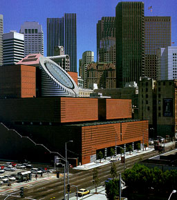
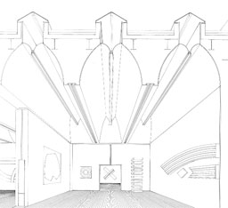
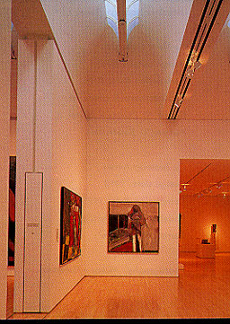
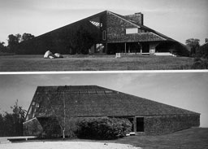
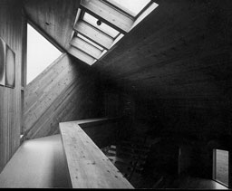
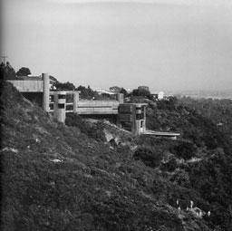
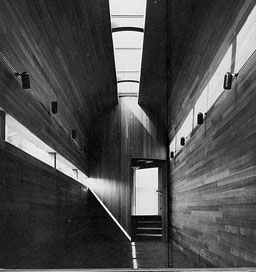

San Francisco Museum of Modern Art, San Francisco, California,
USA, 1991-1995
Mario Botta
The Architecture of Museums
Francisco Asensio Cerver |
According to Mario Botta a museum is a place
where the values and aesthetics of the past and present are visible.
Monumentality is the central theme in his work. Botta uses huge
mathematical forms which reveal nothing about the interior. The
volumes are positioned symmetrical in a hierarchy with the highest
point in the middle like a big temple. Daylight Is coming into
the museum through small openings between the mathematical forms
so they are not recognisable as windows. The outer walls are
uncovered brick. The cylindrical tower covers the atrium and
provides there for daylight. Most of the rooms are illuminated
by natural top lighting which is possible by making use of a
staggered design. The pictures on the right show you how diffuse
natural light comes into the museum.
|

 |
|
Hillman Residence, Long Island, 1979-1981
Norman JaffeGA Houses
A.D.A. EDITA Tokyo |
The client of this houses desired for an open
plan which also can be used as a gallery for photographic work.
The result is an open space including a kitchen, livingspace
and studio which intersects a gallery. The gallery rises to the
full height of the angular roof. The space seems to have a voluntary
form and the interior walls are made of rough sawn pine installed
diagonally which gives the interior an exciting character. The
example which can be seen on the photograph on the right is a
little different from variant Q2. The sloping roof causes a asymmetrical
distribution of daylight. Although there's a window in the right
wall the amount of daylight in the left side is much more then
on the right side of the room. |
 |
|
Block Residence, Los Angeles, California, 1978-1981
Raymond KappeGA Houses
A.D.A. EDITA Tokyo |
As can be seen on the left picture the Block
Residence is situated on a spectacular position against a rocky
hill. The staircases are placed in cylinders which help to carry
the downhill structure. On the photograph on the right the interior
of a hall can be seen. In the left wall a horizontal band of
glass is placed. The band of glass in the middle of the roof
causes also a strip of light on the right wall with a luminance
almost as high as the luminance of the windows itself. Of course
this situation only occurs in case of direct sunlight. |
 |
|
|
|
|
|
|
|
|
|
|
|
|
|
|
|
|